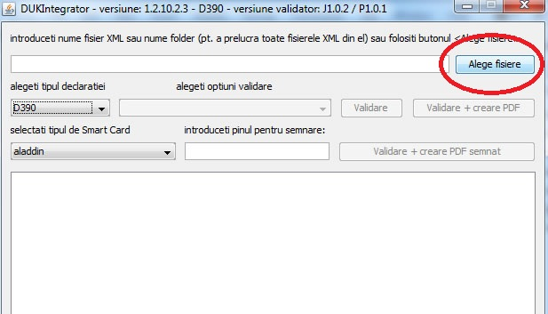
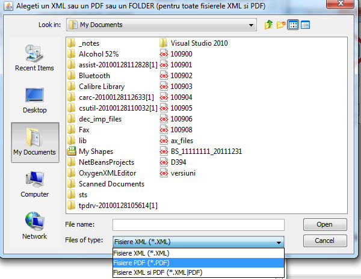
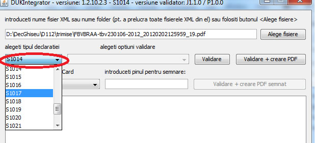
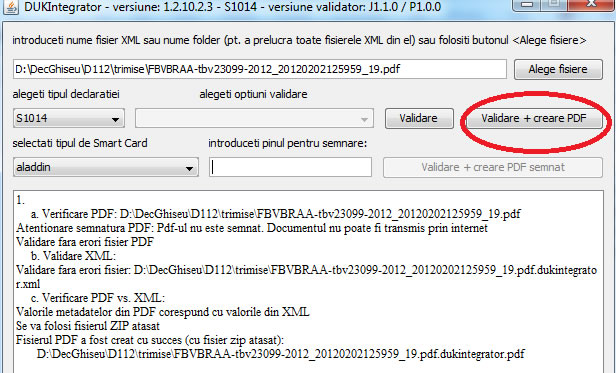

Validarea PDF-ului presupune urmatoarele etape:
Obs. Validarile de PDF sunt identice cu cele care se fac la ghiseu si similare cu cele de pe serverul central (local nu se pot face mai multe verificari de semnatura)
Recrearea fisierului PDF presupune crearea unui nou fisier prnind de la datele din fisierul XML atasat ( acest proces poate rezolva erori de structura PDF saun concordanta intre datele din PDF si cele din XML - de exmplu erorile de la totalPlata_A). Fisierul PDF recreat va fi unul specific DUKIntegrator.
ATENTIE! Fisierul PDF este recreat doar daca fisierul XML este valid !
Pentru a valida un fisier PDF si recrea fisierul PDF:



Dati click pe butonul "Validare + creare PDF":

Pe ecran va apare un mesaj care arata daca recrearea a reusit.
ATENTIE ! Erorile de la validarea PDF-ului vor fi scrise pe ecran. Erorile de la validarea XML-ului, daca este cazul,vor fi scrise in fiserul indicat pe ecran (.err.txt)